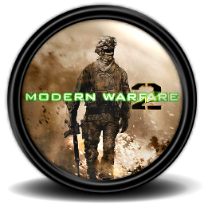

Welkom
G-Unit is een Nederlandse / Belgische FPS gaming clan. FPS staat voor: "First Person Shooter". Wij spelen onder andere: Call of Duty: Modern Warfare 2, Call of Duty: Black Ops en Battlefield Heroes. G-Unit is opgericht in 2012. Een vriendengroep kwam op het idee, na dagenlang verschillende shooters te hebben gespeeld, om een eigen clan op te richten. We zijn nu al uitgegroeid tot één van de grootste multi-gaming clans van Nederland en België en elke dag komen er nieuwe leden bij! Wil je ook lid worden en deel uitmaken van één van de gezelligste FPS clans? Registreer je dan hier. Leden hebben toegang tot de teamspeak server, de gameservers en verschillende andere extra's.

Nieuws
Favela tijdelijk uit Modern warfare 2
 Call of Duty: Modern Warfare 2 mag dan drie delen achterlopen, vandaag de dag zorgt de game toch nog voor controverse. In de multiplayermap Favela staat namelijk een islamitische tekst. Nu zou dat niet zo erg moeten zijn, maar een aantal Islamieten hebben geklaagd bij de ontwikkelaar. De tekst staat namelijk in een badkamer. Het is in Islamitische landen ten strengste verboden om een heilige tekst te plaatsen in de badkamer. De ontwikkelaar Infinity Ward heeft na klachten van een moslimgemeenschap besloten om de map tijdelijk offline te halen.
We apologize to anyone who found this image offensive. Please be assured we were unaware of this issue and that there was no intent to offend. We are working as quickly as possible to remove this image and any other similar ones we may find from our various game libraries. We are urgently working to release a Title Update to remove the texture from Modern Warfare 3. We are also working to remove the texture from Modern Warfare 2 through a separate Title Update. Until the TU is ready, we have removed the Favella multiplayer map from online rotation. Activision and our development studios are respectful of diverse cultures and religious beliefs, and sensitive to concerns raised by its loyal game players. We thank our fans for bringing this to our attention.
Infinity Ward gaat de komende week de map aanpassen om de islamitische tekst te verwijderen uit Favela. Daarna zal de map weer terugkomen als update. Bekijk hieronder de plaats waar je de tekst kon vinden.
Call of Duty: Modern Warfare 3
Het is nog net iets meer dan een maand wachten, voordat we aan de slag kunnen met Call of Duty: Black Ops 2. Tot die tijd zullen we ons nog moeten vermaken met de andere games uit onze collecties waar Call of Duty: Modern Warfare 3 ongetwijfeld één van is. Goed nieuws voor de mensen die toch echt nu al toe zijn aan een aantal vernieuwingen: de multiplayer van Call of Duty: Modern Warfare 3 kent twee nieuwe modi. Zowel Money in the Denk, als de 3v3 hardcore Face-Off modus zijn met de laatste update van Call of Duty: Modern Warfare 3 toegevoegd. Hopelijk is de maand oktober nu wat beter vol te houden met deze nieuwe modi van Modern Warfare 3.
Nieuwe gamerelease over Battlefield 3 online
Tegelijkertijd met Battlefield 3 lanceert EA ook een speciale editie van het iPad magazine Gamerelease. Deze keer een editie over de game van het jaar: Battlefield 3. De game die bekend staat om zijn dynamische multiplayer mappen en de grafische pracht van de Frostbite 2 engine, die beelden op je scherm toont waarvan de mond gaat openstaan. Verder: hoe overleef je de eerste 5 minuten van de multiplayer? Wie is Andy McNab en een overzicht van de belangrijkste voertuigen in de game. Je leest er alles over in deze Gamerelease. Laat ons meteen via de app weten wat je van ons magazine vind en win een van de 10 Dead Space games voor iPad! De Battlefield 3 Gamerelease is beschikbaar in de App Store via: http://bit.ly/ppTy6w.